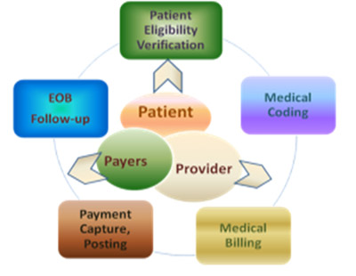

Healthcare Practice Management currently exist to manage medical practices. These services relieve medical professionals of tedious detail work, but rarely do they offer a means to substantially maximize the practice’s bottom line.
National statistics show only about 70 percent of insurance claims, initially submitted on paper, are ever paid by insurance carriers. With electronic submission Physicians Claims can increase the percentage of claims paid to around 98 percent. Additional statistics indicate that it currently costs a medical practice between $8.00-$10.00 per claim to process insurance for their patients. Physicians 1st Billing and Claims can reduce these costs by 50 percent or more. Statistics also show a 30 percent suspension/rejection rate for insurance claims. But adequate profit margins allowed medical practices to ignore sound business procedures. Again the proposed change of ICD-10 and HIPAA 5010 will lead to the 30-40 percent of productivity loss in near future.
Physician’s Claims is contributing over $9,000 to their business. Here we are requesting to borrow another $5,000. We would like to have your attention to this value add.

As a Chaosian we continuously work to overcome the solution by providing the adequate platform with promise to minimize the claim rejection by 20-30 % (alternately gain in revenue by 20-30%). Our end to end expertise to healthcare domain and innovative approaches lead us to achieve and sustain the professional excellence.
Increasing Healthcare cash flow and upgrading technology like ICD-10 require expert attention to the key issue in order to accelerate and sustain the current business Practices. Responding to the new healthcare reform and achieving new excellence in your healthcare practices, we are bound to provide the expert consultation. From basic medical coding to the high end ICD-10 implementation Project need we are here to assist you for your toughest day to day task.